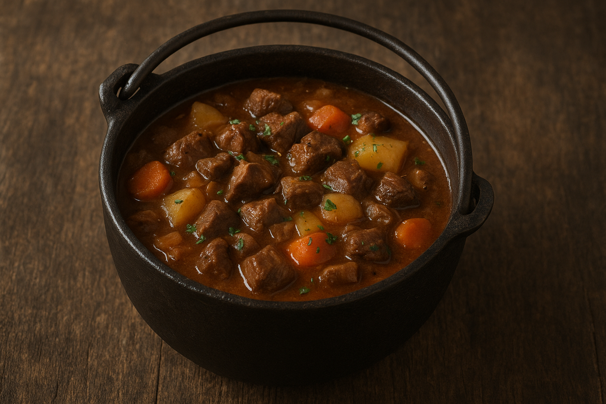

Back Home
Odin’s Allfather Stew
A hearty, smoky stew worthy of the wanderer of the Nine Realms.

Ingredients
-
500 g diced venison (or beef if unavailable)
-
2 tbsp butter
-
1 large onion, chopped
-
3 cloves garlic, crushed
-
3 carrots, sliced
-
2 potatoes, cubed
-
200 g wild mushrooms
-
1 tbsp smoked paprika
-
1 tsp juniper berries, crushed
-
1 bay leaf
-
1 l beef stock
-
Salt & pepper
-
Optional: dash of mead for extra depth
Instructions
-
Heat butter in a cauldron or heavy pot over medium heat.
-
Brown the venison on all sides.
-
Add onion and garlic, cooking until fragrant.
-
Stir in carrots, potatoes, and mushrooms.
-
Season with smoked paprika, crushed juniper berries, and a bay leaf.
-
Pour in beef stock (and mead if desired).
-
Simmer for 1.5–2 hours until the stew thickens and the meat is tender.
-
Adjust seasoning and serve steaming hot—preferably by torchlight.